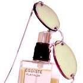

本来ないものが自分の生活の一部になってしまうことは、不毛かもしれない。
「室澤、お前、眼鏡をかけないのか？」
遠山が尋ねた言葉に書類から顔をあげた室澤は怪訝とした顔をした。
黒髪を後ろに撫でつけ、成人男性から見ればややほっそりとしている中肉中背。スーツも着こなせれば、どこかのエリート。はたまた学者という風貌だ。そんな彼が眼鏡をかけると、ますます学者という感じがする。
ただし、室澤は書類を見終わると、すぐに眼鏡を外してしまう。そんなことをいちいちはずしたりなんて行動はめんどくさいだけだろう。
無駄を嫌う彼にしては珍しい行動の浪費。
室澤は眼鏡をグレーの洒落た眼鏡ケースの中にしまいながらため息をついた。
「悪いか？」
「悪いとはいわないが、珍しいとは思うね」
「俺が眼鏡をかけたり、はずしたりするのが？」
機嫌が悪いときの反応であることは察したが、好奇心は猫を殺す。
「時間の浪費とか思わないか？」
室澤が仕事馬鹿であることを一番に理解しているからこそ、言える言葉だ。
遠山は、室澤が仕事馬鹿といっている。室澤謙一郎という男の場合は、仕事中毒、仕事一筋などというと甘いからだ。彼の場合は、仕事中毒どころか、生活の一部になっている。仕事が生活の一部というのは、言い方に多少の語弊があるだろう。なんといっても、生きるために人間は働かなくてはいけない。昔は馬鹿の一つ覚えのように仕事、仕事をして過労死する人間もいた。―――いや、今もいるが。―――室澤は、遠山の知る限りでは過労死する人間ベスト一位だ。彼には休みというものはほぼないらしい。ただ時々、バーにいって気障たらしく飲むぐらいだろう。だが、それも最近は控えろと、室澤から楽しみを削り取ることだけに執念を燃やすようなくそったれの医者からのありがたい助言だ。
生きるためならば、仕方がないと室澤は何事も諦める。いいや、諦めるものとそうでないものをいつも天秤にかけている。諦めるものは、すっぱりとすてるのは、生きたいという欲望のため。それ以外は彼にはなにもない。全てが奪われてしまったことに対して、室澤は生きることを望んでいる。だから、遠山は室澤を見るのが好きでたまらない。
そんな室澤はいつも時間を貴重としていることも良く知っている。貧乏くさいやつめ、とたまに茶化すが、室澤のそういうところも遠山は好ましいと思っている。また、嫌いな人間を好きだと思えるほどに遠山は利口でもなければ、器用でもないことを室澤は知っている。
「遠山、俺は今のところ、自分の目でみれるものは自分の目でみたい。そのうち、眼鏡をかけなくならないといけないにしろ、自分が見れるものは自分で見る」
「ご立派な考えだ」
「あんたは、茶化すのが好きだな」
「そんなことはないさ」
遠山はにやにやと笑って身を乗り出したのに室澤は眉を顰めた。
「だが、室澤、知っとくといいぞ。眼鏡をかけたあんたは色気がある」
「悪いが、俺はお前の趣味に付き合う気はない」
「俺だってお前みたいなのはごめんこうむるよ。そうそう、冴子がいっていたよ。眼鏡をかけた男は五割増しだと、知的に見えるのは罠が多いそうだ。だから信用ならない」
「冴子らしい、哲学的な言葉だ」
「眼鏡をかけた男は本心が見えないから信用ならないってことか、こりゃあ」
「さぁな。だが、その屁理屈でいくと、眼鏡をかけた人間、みんなやましいということだ」
そろそろ、くだらない談話をきり終えるために室澤は立ち上がった。午後からも仕事がはいっている。
「それをいうと、世の中の老眼はどうなるんだ」
「遠山、お前は忘れている」
ドアまで歩いて、ふりかえって室澤はいった。
「この世にたくらみもない全うな人間はいないさ」
遠山が唖然とした顔で室澤を見つめた。
「あんたが眼鏡がほしくなったら、俺がプレゼントしてやるよ」
ドアを出る際に憎まれ口を一つ残して室澤は外へと出ていった。